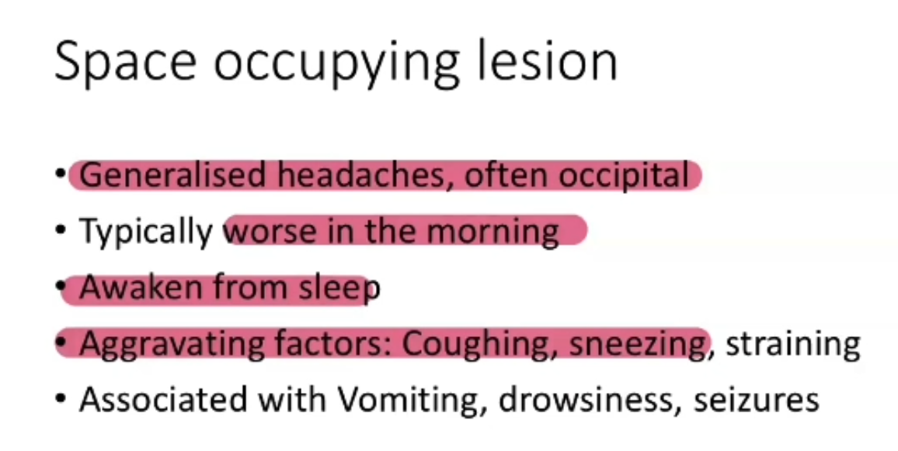

Space-Occupying Lesion (Brain Tumour / Metastasis) - History and Breaking Bad News
Source: Dr. Amir workshop — Med workshop 2 - 2026 / CLASS 1 HEADACHE (Aug 2026 drop) · Specialty: neurology
Presentation
The patient may present with photophobia (barely opening the eyes) or reduced conscious level (drowsy, eyes closed, sleepy). Enter, use an open-ended question and address the concern, then perform SIQORAA.
Pain Characteristics (SIQORAA)
- Site: initially unilateral, now generalised.
- Quality: throbbing.
- Intensity: initially 2-3/10, now worsening to 4-5/10.
- Onset/duration: 3 months.
- Timing: constant and progressive.
- Alleviating/aggravating: nothing helps; no medication relieves it.
A chronic, progressive, constant, worsening headache that nothing relieves does not fit migraine, tension or infection — rule out a brain tumour first.
Red Flags and the Melanoma History
- Worse on bending, coughing and sneezing — positive.
- Early-morning headache and vomiting — positive.
- Pain waking at night — negative.
- Neurological deficit (weakness, numbness, blurred vision) — negative.
- Weight loss — negative.
- Personal/family history of cancer — positive: previous melanoma (skin cancer).
When a cancer history is found, ask the four AMC follow-up questions: when diagnosed; how treated (the patient insists it was fully excised with no follow-up needed); whether under follow-up; and complications (explored to assess for metastasis).
Investigations Provided on the Card
In 2025 the examiner provided a card showing papilloedema (loss of the sharp optic-disc margin with disc oedema and bulging). A recalled variant hands over a CT scan showing a mass in a lobe with midline shift. Primary brain tumour and metastasis from melanoma (one of the most aggressive cancers) cannot be distinguished clinically — there is a mass in the brain, most likely tumour, with strong reasons to suspect metastatic melanoma.
Breaking Bad News
The first diagnosis is cancer; there is no reassuring differential. Use sensitive breaking-bad-news communication skills. "I was considering different causes for your headache, but in your case I'm concerned about the possibility of a brain tumour, or spread of your melanoma to the brain — we call that metastasis." Respond to emotion ("I'm really sorry to tell you that").
Reasons: from the history, multiple red flags and a headache that wakes/worsens in the morning and worsens on coughing/sneezing; on examination, swelling behind the eyes (papilloedema) indicating raised intracranial pressure; and on the brain scan, a mass which may be a primary tumour or metastatic melanoma.
Examination and Paediatric Note
On examination in these cases there is usually a neurological deficit and papilloedema is common. In paediatric brain-tumour cases the child may show hypertension, bradycardia and irregular respiration (Cushing's triad). In this adult case there is no neurological deficit, but papilloedema and the CT confirm the diagnosis.
Case Figures



🔬 Expert Review & Enhancements
Reviewed by: history-taking-expert (Australian clinical supervisor) · fact-checked against the irStudy medical textbook RAG index.
✏️ Corrections
No factual corrections required.
⭐ Suggested Enhancements
🏷️ Metadata
📚 Reference Citations (RAG)
Nicholas J Talley, Simon O'Connor - Talley and O'Connor's Clinical Examination (8th edition)-Elsevier Australia (2017).pdf p.56 (p82) qdrant:d5853a0b-ca24-44dd-a24c-33a0ef731e28
Churchills_Pocketbook_of_Differential_Diagnosis (1).pdf p.94 (p107) qdrant:efd77015-7c3e-4212-8a60-24109fecf13b
John Murtagh General Practice, 8th Edition.pdf p.80 (p229) qdrant:c4c0c7c3-11ce-41ad-b015-a13ca14f48ba